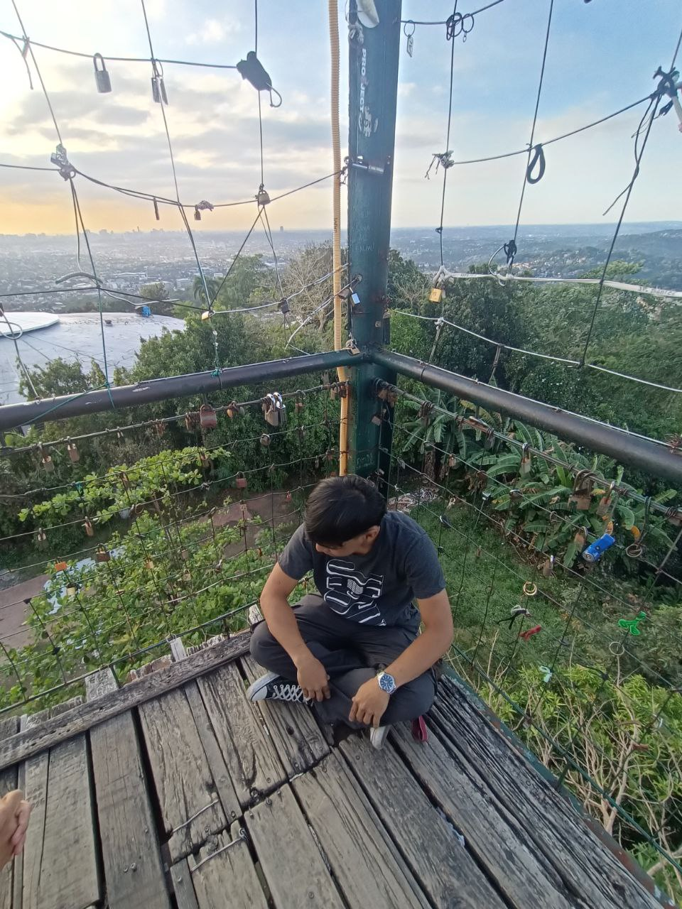

Hello! I’m Kenneth Amiel L. Ibañez, a second-year student at Eulogio "Amang" Rodriguez Institute of Science and Technology, currently pursuing my studies in the field of Information Technology. I have a deep interest in programming, software development, and emerging technologies, and I am committed to continuously improving my technical skills to become a competent and innovative IT professional in the future.
My journey in programming began with learning foundational languages such as C and C++. Through these languages, I developed a strong understanding of core programming concepts including variables, control structures, functions, arrays, pointers, and object-oriented principles. More importantly, studying C and C++ trained me to think logically and approach problems in a structured and analytical way. I learned how to break down complex problems into smaller, manageable components and design efficient solutions through careful planning and debugging. These experiences strengthened my problem-solving mindset and helped me build confidence in writing clean, organized, and efficient code.
In addition to general programming, I have hands-on experience with Excel VBA, where I create automation tools and enhance spreadsheet functionality to improve productivity. I enjoy identifying repetitive or time-consuming tasks and designing automated solutions that make processes faster and more efficient. Working with VBA allowed me to understand how programming can be applied in practical, real-world scenarios, especially in data organization, reporting, and workflow improvement.
Currently, I am expanding my knowledge in web development. I am fascinated by how front-end and back-end technologies work together to create dynamic and interactive web applications. On the front-end side, I enjoy designing user interfaces that are simple, responsive, and user-friendly. On the back-end side, I am learning how servers, databases, and application logic function to support and power websites. Seeing a project progress from an idea to a fully functional website motivates me to continue learning and experimenting with new tools and frameworks.
Beyond technical skills, I value continuous learning, adaptability, and self-improvement. Technology is constantly evolving, and I believe that staying curious and open to new ideas is essential for growth in this field. I actively seek opportunities to challenge myself, whether through academic projects, personal practice, or exploring new technologies outside of class requirements.
As a future IT professional, my goal is not only to build functional systems but also to create solutions that are efficient, reliable, and meaningful. I am eager to gain real-world experience through internships, collaborative projects, and industry exposure, where I can apply my knowledge, learn from experienced professionals, and further refine my skills.
I am passionate about technology and excited about the opportunities ahead. With dedication, persistence, and a strong desire to learn, I am determined to continue growing and making valuable contributions in the field of programming and information technology.
I provide reliable and professional computer services dedicated to helping individuals and businesses maintain efficient and smoothly functioning technology systems. My goal is to deliver practical, cost-effective, and long-lasting solutions that ensure optimal system performance and customer satisfaction.
My services include computer repair and troubleshooting, hardware diagnostics and upgrades, virus and malware removal, software installation and configuration, data recovery, and basic network setup. I carefully assess technical issues, identify the root cause of problems, and implement appropriate solutions to restore system functionality. I prioritize efficiency and attention to detail to minimize downtime and prevent recurring issues.
In addition to offering computer services, I have also assisted Professor Rivera in maintaining and troubleshooting the computers in our computer laboratory at Eulogio "Amang" Rodriguez Institute of Science and Technology. My responsibilities included diagnosing system errors, fixing software-related problems, optimizing performance, and ensuring that the laboratory computers were ready for student use. This experience allowed me to apply my technical knowledge in a real-world environment, strengthen my troubleshooting skills, and develop a strong sense of responsibility when handling institutional equipment.
Through these experiences, I have learned the importance of professionalism, clear communication, and reliable service. I am committed to continuously improving my technical expertise to provide high-quality computer solutions that meet the needs of clients and organizations.
kennethibanez25@gmail.com
iwasken1gmail.com
09945243143